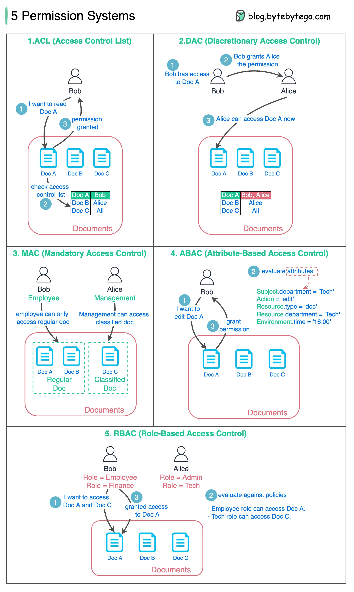

The diagram below lists 5 common ways.
1. ACL (Access Control List)
ACL is a list of rules that specifies which users are granted or
denied access to a particular resource.
- Pros - Easy to understand.
- Cons - error-prone, maintenance cost is high
2. DAC (Discretionary Access Control)
This is based on ACL. It grants or restricts object access via an
access policy determined by an object’s owner group.
- Pros - Easy and flexible. Linux file system supports DAC.
-
Cons - Scattered permission control, too much power for the object’s
owner group.
3. MAC (Mandatory Access Control)
Both resource owners and resources have classification labels.
Different labels are granted with different permissions.
- Pros - strict and straightforward.
- Cons - not flexible.
4. ABAC (Attribute-based access control)
Evaluate permissions based on attributes of the Resource owner,
Action, Resource, and Environment.
- Pros - flexible
-
Cons - the rules can be complicated, and the implementation is hard.
It is not commonly used.
5. RBAC (Role-based Access Control)
Evaluate permissions based on roles
- Pros - flexible in assigning roles.